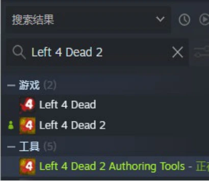
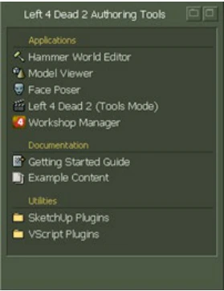
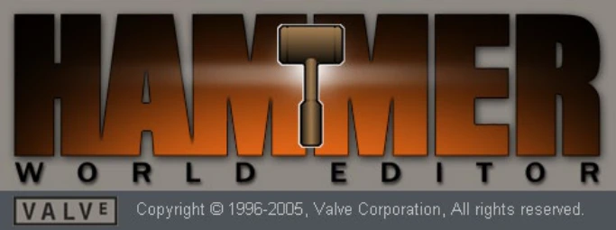
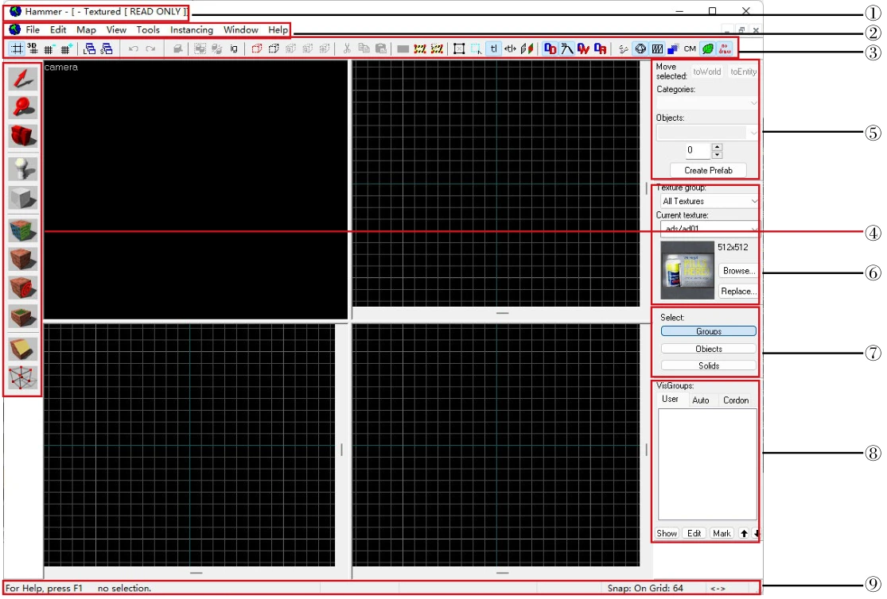
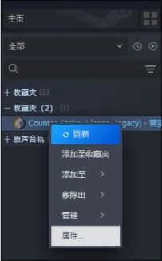
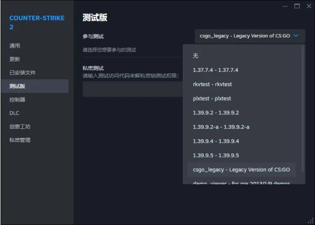
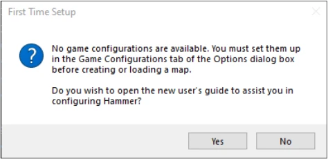
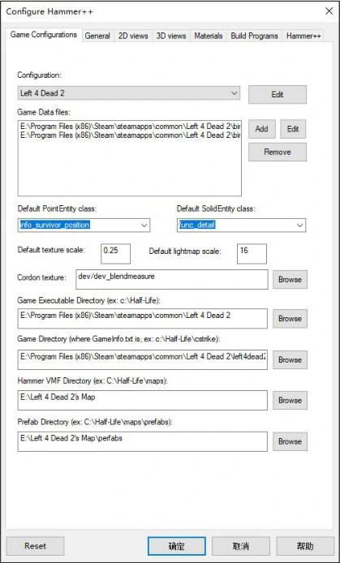
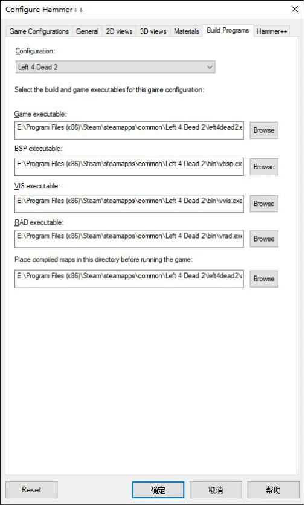

在本章中我们将要了解起源引擎以及求生之路的基本内涵，求生之路的背景及它是怎么来的，起源引擎是什么，为什么出现了起源引擎，以及它可以做什么。我们将学习Hammer的用户界面，了解如何使用Hammer。
1.1 起源引擎#
「起源」引擎是 Valve 的一个 3D 游戏引擎，是Goldsource（金源引擎）的后代引擎。起源引擎被 Valve 和其他企业广泛应用，如同金源引擎一样，也同样被全球无数的游戏社区制作MOD时使用。其兼容性、灵活性、完整性使其成为游戏开发者手中最强大的工具。自1998年《半条命》发售，《半条命》系列就大获好评。即使是以后的《半条命2》也同样是如此。起源引擎是开源的，拥有庞大的社区，有无数的起源模组。《反恐精英》系列、《传送门》系列、《军团要塞》系列等也都是精品。 起源引擎可以实现你绝大多数的想法。
Source这个词早在Valve第一代游戏《半条命》时代就有出现。在《半条命》游戏文件夹中，引擎文件夹有着两个部分：GoldSource和Source。他们把成熟的技术放在GoldSource（「金牌起源」）中，而未成熟的技术则在Source（意为「起源」）中，今天，Valve的梦想已经实现，他们当年渴望实现的技术已经浓缩在了这个强大的引擎——「起源」引擎中。
目前，Valve开发了Source 2，是一款次时代游戏引擎，并用于《半条命：艾利克斯》。起源1的继任者——起源2的功能及特色在《半条命：艾利克斯》中体现得很好。针对于起源2的Hammer比以前起源1的Hammer拥有更多功能，比如更好的光照预览、热加载等等。Dota 2也升级到了起源2，并且它是免费的。你可以通过Dota 2体验起源2的Hammer。S&box将会是第一款使用起源2的第三方游戏。
针对于起源2的Hammer，起源社区推出了一个针对老起源的新Hammer——Hammer++。Hammer++在原先的Hammer上进行修改，带来了许多只有起源2才有的功能。Hammer++现在a支持以下起源引擎分支：
- •反恐精英：全球攻势（Counter-Strike：Global Offensive）；
- •军团要塞2（Team Fortress 2）；
- •Garry's Mod；
- •反恐精英：起源（Counter-Strike：Source）；
- •Source 2013和Source 2013 Multiplayer；
- •求生之路2（Left 4 Dead 2）。
针对求生之路2的Hammer++已经有测试版，并已发布b。Hammer++现在主要由Ficool2开发和维护。CS：GO版本的Hammer++现在已经无法使用（因为Counter-Strike 2的更新），需要下载起源1版本的CS：GO才能使用。
求生之路使用自己的引擎分支——求生之路引擎分支（Left 4 Dead engine branch）。它与其他以前的分支不同，它完全独立，不需要安装其它Source早期版本的源代码。求生之路引擎分支的源代码不可用。本分支与Source 2007（又称「橙盒引擎分支」）并行维护，但最终随着异形丛生引擎分支的发布而停止使用。
起源引擎中的坐标是（X，Y，Z），其中 X 是向前/东，Y 是左/北，Z 是向上。（0，0，1）是原点正上方一个单位的点。起源引擎中主要采用笛卡尔坐标系（Cartesian coordinates）。
1.2 求生之路#
1.2.1 背景设定#

20XX年，在美国佐治亚州的沙瓦那爆发了一场大型的流行性瘟疫，这种瘟疫是由变种的狂犬病毒引起，一经爆发便迅速的蔓延，人类在感染了这种病毒后变异为丧尸并通过攻击他人来蔓延传播，很快瘟疫便感染了大部分地区。
这时政府迅速组织了防疫组织——CEDA来前往感染区进行救助，企图治疗好这些感染者，但CEDA的想法过于天真，防疫措施和手段都和一般流感无二，他们单纯的认为病毒是由空气传播的。
由于CEDA效率颇低，人们起初对CEDA的期盼化为了愤怒。最终，瘟疫大规模的蔓延，甚至将CEDA穿着所谓防化服的特工也被感染，最终CEDA撤出了城市，转而由军队来处理，军队甚至计划用核弹摧毁城市防止瘟疫蔓延。
但城市里还有很多幸存者，他们自己用枪支来保卫自己不被感染，而玩家便是在这幸存者大军中一个四人组中的一员。
1.2.2 发展历史#
求生之路由Turtle Rock Studio与Valve制作，是第一人称恐怖射击游戏。求生之路来源于Counter-Strike：Source里的一个小游戏模式，只允许人机拿着匕首，玩家则可以拿着枪械。这个游戏模式原本是工作室里面的一个休闲小游戏，但后来想到可以将该游戏模式做成丧尸题材，于是在该模式的基础上开发了求生之路初版。初版代号为「Terror Strike」。
初版只是把环境改的昏暗，氛围更恐怖，人机看起来像丧尸一样，玩家则可以拿着枪械「突突突」。Turtle Rock Studios于2006年3月16日宣布，他们将与Valve合作开展一个「Source项目」，后来被命名为Left 4 Dead，该项目将利用Valve的Source Engine和Steam。2008年1月10日，Turtle Rock Studio被Valve收购并更名为Valve South，这也就是为什么求生之路的开发商是Valve South。
在Valve的帮助下，游戏逐渐完善，便有了今天的求生之路。
2008年11月18日，《求生之路》（Left 4 Dead）发布于Xbox 360和PC平台。
此前，该工作室还与Valve合作，制作了《反恐精英：零点行动》、《反恐精英》（Xbox）等游戏，以及《反恐精英：起源》的几张地图。
之后，《求生之路2》主要由Valve制作，Valve South后来（2010年3月）被解散，工作室又回到了独立运行。工作室主要负责《消逝》战役（求生2）（2009年）以及《牺牲》战役（求生1和求生2）（2010年）的制作。
2009年11月17日，《求生之路2》（Left 4 Dead 2）发布于Xbox 360和PC平台。与求生之路1相比，求生之路2中有新的战役、新的剧情、新的模式、新的角色和武器，并且支持强大的VScript脚本系统，拥有更高的拓展性（提供了一套创作工具，且拥有更多的功能，允许创作各种战役和Mod）。
2010年4月22日，战役《短暂时刻》（The Passing）DLC发布，出现了一种新的枪支M60和一种新型近战武器高尔夫俱乐部，以及一种新型的「罕见感染者」堕落生还者。新的生存模式、对抗模式和清道夫模式地图发布。
2010年10月5日，战役《牺牲》（The Sacrifice）DLC发布，还添加了战役《毫不留情》（No Mercy）。这些战役都支持所有模式。
2012年7月24日，由马修·卢德莱特a制作的非官方战役《刺骨寒溪》（The Cold Stream）DLC发布，成为官方地图之一。此次DLC把求生之路1中的战役都移植到了求生之路2之中。现在求生之路2默认包含求生之路1的内容。
2013年1月18日，求生之路2开始支持创意工坊功能。
随着《短暂时刻》DLC的发布，许多突变模式（Mutations）陆续加入到游戏中。
2013年2月12日，求生之路2拓展突变系统（Left 4 Dead 2 Expended Mutation System，简称L4D2 EMS）发布。之前版本的突变系统允许用户通过对现有游戏规则和导演变量进行微小修改来创建新的突变模式。而现在EMS 提供了新的工具，使构建比以前更有趣、更复杂的突变模式成为可能，例如Holdout、Dash、Shootzones等突变模式。
之后，在很长一段时间内，求生之路2几乎没有任何更新发布。
2020年9月24日，战役《临死一搏》（The Last Stand）发布，并且发布了社区大更新——The Last Stand Community Update。此后，求生之路2不断有补丁更新，陆续添加了许多新功能。但是，此次大更新之后，玩家怨气很重（因为社区制作组乱改游戏的一些功能），V社装死，社区服务器爆炸，插件失效，存在着各种问题。
2024年4月21日，求生之路2的Hammer++创作工具发布。
1.3 求生之路2创作工具#
求生之路2创作工具（Left 4 Dead 2 Authoring Tools）可在你的Steam库里下载，如果购买了求生之路。在库内找到并下载。下载启动后，双击「Hammer World Editor」即可开始地图创作，如图 1-3-1所示。




求生之路2创作工具也有其他的工具，比如Workshop Manager功能是用于发布你的地图或者Mod。当然你也可以使用第三方工具发布你的地图（例如撬棍）。
1.4 认识Hammer#


Valve Hammer编辑器（Valve Hammer Editor）是起源引擎中编辑地图的编辑器，非正式名称为Hammer。我们现在所使用的Hammer是版本4.1。打开Hammer后，点击「File」选项卡，再点击「New」新建一个地图。此时你会看到4个视图如图 1-4-1 所示。


你可以通过Ctrl+A来自动调整里面4个窗口的大小。
下面我们来了解Hammer的界面布局：
- 1.
标题栏①
显示当前编辑的地图源文件。
- 2.选项栏②
有各种选项卡及它们的二级选项的一栏。
- 3.地图查看和操作栏（Map Views and Operations）③
选项栏下来是「地图查看和操作栏」③，在窗口上方的栏，包括在地图里控制对象视野的各种按钮，例如网格和捕捉工具。
- 4.地图工具栏（Map Tools）④
它允许你切换不同的模式以便在你的地图里选择、创建、替换、组织和操作不同的对象。
- 5.对象栏（New Object）⑤
通过对象栏可以放置道具、灯光、物品等点实体；通过对象栏可以决定固体工具所创建的固体形状，默认是方块。通过对象栏我们可以使用固体工具创建圆柱形、球形等。
- 6.纹理栏（Textures）⑥
在图中第二部分为「纹理」栏，纹理栏允许你知道当前选择的纹理以及通过「浏览……」按钮（Browse…）来浏览其它纹理。
- 7.选择模式栏（Selection Modes）⑦
在地图里通过「选择模式」栏来切换选择对象的模式：
「组」（Group）：你将选择所有被组合在一起的对象（即选择一个组）；
「对象」（Object）：你将选择单个对象，而不是选择整个组；
「固体」（Solid）：你将选择单个固体无论它是否和其它固体一起整合为一个对象（适用于固实体）。
- 8.可见组栏（Vis-Group）⑧
它允许你控制每个可见组的隐藏状态，可以自己建立可见组，也可以使用Hammer创建的自动可见组。它可以很好的管理地图内容。
- 9.状态栏（Status Bar）⑨
位于界面底部的状态条提供你在制作时一些有价值的信息，例如被选择的对象的大小和当前网格的信息。
- 10.Hammer 视图（Hammer Viewports）
Hammer正中间的4个视图分别是（从左到右、从上到下）：三维视图、俯视图、正视图、侧视图。你可以在这些视图内对对象进行操作。
一般情况下，三维视图默认为线框图（显示每个物体的轮廓），而不是3D Texture模式（即在游戏中看起来的样子）。点击三维视图左上方的camera→3D Texture可调整为显示物体的纹理。
1.5 安装Hammer++#
Hammer++是一款强大的地图制作工具，解决了许多Valve Hammer Editor引入的问题，并添加了一些对每位地图制作者都有用的必要功能。然而，目前唯一官方支持的Hammer++版本适用于《反恐精英：起源》、Source 2013单机版、Source 2013多人版、《团队要塞2》和《反恐精英：全球攻势》。幸运的是，可以配置Hammer++以使用原本并非针对的其他游戏的资源和编译器，包括《传送门2》、《求生之路2》、《黑山基地》等！几乎每款Source引擎游戏都可以使用某个版本的Hammer++ 运行。
对于《求生之路2》，我们需要安装CS：GO版本的Hammer++。需要注意的是，在该版本下的Hammer++不支持某些只有求生之路引擎分支特有的模型，部分模型会显示为ERROR模型或者或导致Hammer++闪退。
下面来看看如何为《求生之路2》安装Hammer++。




1.5.1 使用CS：GO版本的Hammer++#
- 1.下载和安装
首先，你需要去Hammer++的官方网站a下载CS：GO版本的Hammer++。进入该网站后，点击Download按钮，然后滚动网页到下方的下载链接，找到CS：GO的图标，然后点击该图标。你的浏览器应该会开始下载。它应该是一个压缩包。
然后，你需要下载CS：GO。但是，Counter-Strike 2已于2023 年 9 月 27 日发布，届时CS：GO无法下载。但是你可以通过CS2来下载CS：GO。具体方法：
- •通过Steam下载CS2。
- •在Steam中右击Counter-Strike 2，点击「属性…」。
- •点击「测试版」，然后在「参与测试」选项中选择「csgo_legacy - Legacy Version of CS:GO」。
此时，Steam会开始下载CS：GO。把下载的Hammer++压缩包里的bin文件夹解压到CS：GO的目录（通过右击CS2→「管理」→「浏览本地文件」可以找到该目录，即「……\steamapps\common\Counter-Strike Global Offensive\」）下。
之后，你应该可以在CS：GO目录下的bin文件夹内找到hammerplusplus.exe。先不要着急启动，我们还需要配置一下资源文件。
- 2.资源文件的配置
此时，CS：GO文件夹里面是没有求生之路2的资源文件的。这意味着当你使用Hammer++加载求生之路2地图的工程文件时会导致材质、模型丢失之类的问题。为此，我们需要在CS：GO的文件夹内添加求生之路2的资源文件。你可以选择把包含求生之路2资源文件的文件夹都复制到CS：GO目录下。教程中将通过创建目录链接的方式来完成这个过程。
打开求生之路2的目录，方法和打开CS：GO的目录相同。我们需要的是以下这几个文件夹：
- •left4dead2（游戏主要内容）
- •left4dead2_dlc1（《短暂时刻》DLC）
- •left4dead2_dlc2（《牺牲》DLC）
- •left4dead2_dlc3（《刺骨寒溪》DLC，包括《刺骨寒溪》和一代全部地图）
- •update（《临死一搏》更新）
你可以把这些文件夹直接复制到CS：GO的目录下。但是这会耗费很多时间，同时造成大量不必要的磁盘空间浪费。所以我们通过创建目录链接来解决。
按下Windows徽标键+R，打开「运行」，然后键入「cmd」，并按下Ctrl+Shift+Enter，以管理员身份打开命令提示符。此时应该会弹出用户账户控制界面，你需要点击「是」。我们通过命令mklinka来创建目录链接。
在命令提示符中键入以下命令b


：
- 1mklink /j "D:\SteamLibrary\steamapps\common\Counter-Strike Global Offensive\left4dead2" "C:\Program Files (x86)\Steam\steamapps\common\Left 4 Dead 2\left4dead2"
- 2mklink /j "D:\SteamLibrary\steamapps\common\Counter-Strike Global Offensive\left4dead2_dlc1" "C:\Program Files (x86)\Steam\steamapps\common\Left 4 Dead 2\left4dead2_dlc1"
- 3mklink /j "D:\SteamLibrary\steamapps\common\Counter-Strike Global Offensive\left4dead2_dlc2" "C:\Program Files (x86)\Steam\steamapps\common\Left 4 Dead 2\left4dead2_dlc2"
- 4mklink /j "D:\SteamLibrary\steamapps\common\Counter-Strike Global Offensive\left4dead2_dlc3" "C:\Program Files (x86)\Steam\steamapps\common\Left 4 Dead 2\left4dead2_dlc3"
- 5mklink /j "D:\SteamLibrary\steamapps\common\Counter-Strike Global Offensive\update" "C:\Program Files (x86)\Steam\steamapps\common\Left 4 Dead 2\update"
完成后，你会发现在你的CS：GO目录下多了几个带快捷方式标志的文件夹。这表明你创建目录链接成功了。现在你可以启动Hammer++进行下一步的配置。
- 3.配置Hammer++
启动bin目录下的hammerplusplus.exe程序以打开Hammer++。通常情况下，如果是第一次启动Hammer++，Hammer++会提示你进行游戏配置（如图 1-5-3 所示）。
我们需要点击No。点击Yes会跳转到VDC上配置Hammer的教程。之后，你会看到如图 1-5-4所示的界面，但完全是空白的。
在「Game Configuration」选项卡中，执行下列操作之一：
- •

图 1-5-4 配置Hammer++界面 点击Edit→Add来新建一个游戏配置，并将其命名为「Left 4 Dead 2」。然后点击OK→Close。
- •在Configuration中选择「Left 4 Dead 2」。
- •点击Game Data Files一栏中的「Add」按钮（位于小的Edit按钮旁边）。
- •此时会打开文件资源管理器窗口，你需要的文件是位于求生之路2的bin目录下的left4dead2.fgd文件（……\steamapps\common\Left 4 Dead 2\bin\left4dead2. fgd）。

- •添加完这个文件后，把Default PointEntity class设置为「info_survivor_position」，把Default SolidEntity class设置为「func_detail」。
接下来，执行下列操作之一：
- •把Game Executable Directory设置为求生之路2的目录（即「……\steamapps\Left 4 Dead 2」）。
- •把Game Directory设置为gameinfo.txt文件所在的文件夹（即「……\Left 4 Dead 2\left4dead2」）。
- •
把Hammer VMF Directory设置为你需要存储工程文件的位置，例如「……\Left 4 Dead 2\sdk_content\mapsrc」。

图 1-5-5 设置好的Build Programs选项卡界面 - •把Prefab Directory设置为你想要存储预制件（一种类似模板的vmf文件，可以插入另一个vmf文件内来重复使用一组相同的内容）的位置。

完成以上配置后，转到Build Programs选项卡，执行下列操作之一：
- •把Game executable设置为left4dead2. exe的文件路径（……\Left 4 Dead 2\left4dead2.exe）。
- •把BSP executable、VIS executable、RAD executable分别设置为bin目录下的vbsp. exe、vvis.exe、vrad.exe。
- •把Place compiled maps in the directory before running the game设置为 「……\Left 4 Dead 2\left4dead2\maps」。
- •点击确定并关闭Hammer++。
现在，我们还需要配置lights.rad文件。用文本编辑器打开位于「……\Left 4 Dead 2\left4dead2」下的lights.rad文件，复制里面的全部内容。然后转到CS：GO的lights.rad文件（位于「……\Counter-Strike: Global Offensive\csgo」下），把复制的内容添加到里面已有的文本下方，而不是直接覆盖文件。然后按下Ctrl+S保存修改。
大功告成！现在你已经正确安装了Hammer++，现在它可以正常使用了，只需要启动CS：GO的bin目录下的hammerplusplus.exe程序即可。
1.5.2 使用专属于求生之路2的Hammer++#
专门为《求生之路2》打造的Hammer++已经于2024年4月21日发布。
具体安装步骤已经在1.5.1中给出，但是有以下不同：
- •和1.5.1中的「1. 下载和安装 」中的操作类似，但是你需要：
- 1.下载求生之路2的Hammer++。
- 2.把求生之路2的Hammer++安装到求生之路2的目录下。
- 3.不用下载CS：GO及其Hammer++。
- 1.
- •不需要进行1.5.1 中的「2. 资源文件的配置 」步骤。
- •不需要下载CS：GO，也不用进行lights.rad文件的配置。
由于是为求生之路2量身定做的Hammer++，因此求生之路系列中特有的着色器和材质、模型等是可以正常加载显示的。但因为是测试版，目前仍然存在一些问题。
习题1#
- 一、选择题
- 1.起源引擎的前身是什么引擎？
A. 虚幻引擎 B. 金源引擎 C. Unity引擎 D. 虚幻引擎
- 2.《求生之路》的背景设定是围绕哪种灾难展开的？
A. 外星入侵 B. 僵尸病毒爆发 C. 自然灾害 D. 核战争
- 3.Hammer编辑器最初是为哪个游戏开发的？
A. 《半衰期》 B. 《求生之路》 C. 《反恐精英》 D. 《传送门》
- 4.以下哪一项不是Hammer编辑器的功能？
A. 创建地图地形 B. 编译地图 C. 创建动态光源 D. 运行游戏脚本
- 二、填空题
- 5.起源引擎使用的物理引擎是______。
- 6.Hammer编辑器中，默认的网格单位是______，通过该单位可以帮助用户对齐对象。
- 7.在求生之路中，地图制作者可以使用______工具来创建和编辑地图中的物体。
- 三、简答题
- 8.简述起源引擎的主要特点，并解释它为何广泛用于多人射击类游戏。
- 四、论述题
- 9.论述起源引擎与其他游戏引擎相比的优势和劣势。可以参考虚幻引擎或Unity进行比较。
- 10.讨论Hammer编辑器的功能与局限性。为什么一些高级制作者会选择其他工具来配合Hammer进行地图设计？
原书脚注
- 原书第 3 页 a 截至2024年5月2日。
- 原书第 3 页 b 截至2024年5月2日。
- 原书第 5 页 a马修·卢德莱特（音译），即Matthew Lourdelet，求生之路2战役《邪恶双眸》（2 Evil Eyes）的作者。
- 原书第 9 页 a https://ficool2.github.io/HammerPlusPlus-Website/
- 原书第 10 页 a 此命令用于创建目录或文件符号链接或硬链接。有关详细信息，请参阅： -https://learn.microsoft.com/zh-cn/windows-server/administration/windows-commands/mklink。
- 原书第 10 页 b 这里假设求生之路2和CS：GO的目录分别为C:\Program Files (x86)\Steam\steamapps\common\Left 4 Dead和D:\SteamLibrary\steamapps\common\Counter-Strike Global Offensive。因此你需要根据你的求生之路2和CS：GO的实际目录来调整命令内容。